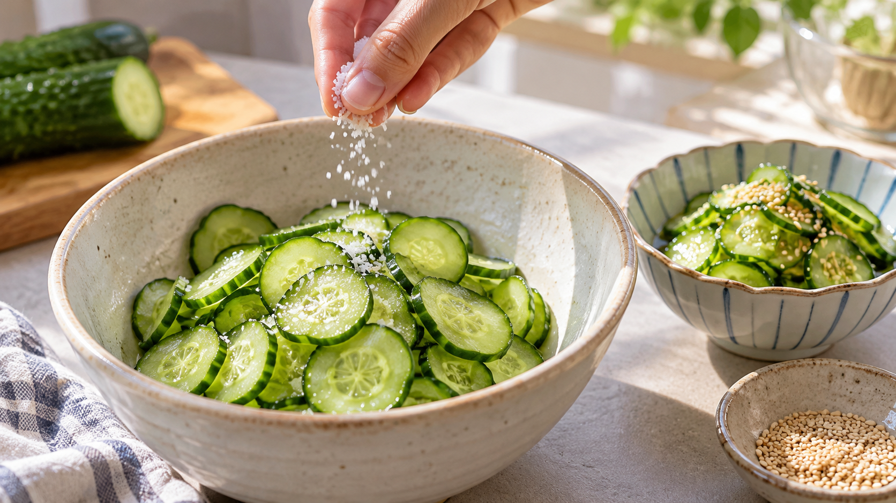

きゅうりを塩もみすると食感が変わる｜水分移動と細胞の張り
きゅうりの酢の物を作るとき、薄切りにしたきゅうりをそのまま和えるか、先に塩でもむか。小さな手順の違いなのに、食べたときの感じは変わる。なぜだろう。
塩を振ると、きゅうりから水分が出て、みずみずしく張った状態が少しゆるむ。 塩もみは、必ず歯ごたえを強くするためではなく、しんなりした食感に整え、水っぽさを抑えるための下ごしらえだ。
きゅうりの中には、水を含んだ小さな部屋がたくさんある。水で膨らんだ風船を思い浮かべると、あの張りを想像しやすい。切ったきゅうりに塩を振ると、外側の塩分が濃くなり、水分が外へ移りやすくなる。水が減れば、内側から押し広げる力も弱まる。
きゅうりを塩水に浸して調べた研究では、塩が果肉に入り、水分が減ることが確認されている。別の研究では、きゅうりの中の張りが、硬さや歯切れに関わることも示された。ただし、これらは家庭で数分だけ塩もみした酢の物を直接調べた結果ではない。
そこから家庭の塩もみを考えると、水分が出るにつれて、きゅうりは生のときの張りが落ち、しんなりした食感へ近づくと考えられる。皮の歯切れを感じることはあっても、「塩もみすれば必ずシャキシャキになる」とは言えない。
酢の物では、先に出た水分を絞ってから調味すると、和えたあとに水っぽくなりにくい。農林水産省が紹介する奈良県の「蛸もみうり」でも、今のきゅうりは軽く塩もみし、水気を絞ってから酢の物にしている。
きゅうりの酢の物（小鉢2人分）
材料
- きゅうり：1本（約100g）
- 塩：ひとつまみ
- 酢：小さじ2
- 砂糖：小さじ1/2
- 白いりごま：少々
作り方
- きゅうりを洗って薄切りにし、塩を全体に振って軽くもむ。
- 5分ほど置き、水がにじんだら両手で包むようにして水気を絞る。まだ水が出ていなければ、少し置いてから絞る。
- 酢と砂糖を混ぜ、きゅうりと白いりごまを和える。塩気があるので、味を見てから必要なら調味する。
この「先に水分を出してから和える」という順番は、キャベツのコールスローや大根の和え物にも使える。野菜の種類や切り方で出る水の量は違うので、時間だけで決めず、表面に水がにじんだところを目安にするとよい。
生のきゅうりの張りを残したいなら、そのまま切って食べる。酢の物でしんなりまとめたいなら、軽く塩もみして水気を切る。食感を変える鍵は、水分をいつ外へ出すかにある。